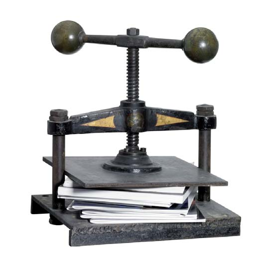

Una breve historia del libro
4. El libro y la imprenta manual
El libro impreso constituye un paso más en la historia de la forma del libro. Los primeros libros salidos de la imprenta en el siglo XV todavía imitaban los códices en cuanto a formato, encuadernación, reservas para las iniciales, etc.; pero eran realizados con papel impreso en vez de con papiro o pergamino manuscrito. También debe tenerse en cuenta que antes de utilizarse la impresión con tipos móviles, se realizaron otros libros mediante la técnica xilográfica de origen chino.
4.1. El libro xilográfico
La xilografía consiste en imprimir con una plancha de madera en la que previamente se ha tallado la imagen deseada con un buril o una gubia. Se suele utilizar una sola matriz (tabla, taco o bloque) por página. Una vez entintada, se aplica sobre ella el papel mediante una prensa plana (tórculo) y se obtiene así la impresión del relieve. Esta técnica es originaria de China y una de las xilografías más antiguas que se conoce se realizó en Japón en el año 770. En Europa, las primeras xilografías conocidas se realizaron a finales del siglo XIV y comienzos del XV. En cuanto al libro xilográfico, también llamado libro bloque o libro tabelario, el más antiguo conocido se realizó en China y data del año 868, según el propio texto del libro. El primer libro xilográfico europeo es la denominada “Biblia Pauperum” de 1430 y en total, en Europa, el número de libros impresos con esta técnica apenas supera la treintena de títulos. Entre todos ellos suman un centenar de ediciones aproximadamente. A partir de 1480 ya no queda constancia de ninguno, aunque la técnica siguió utilizándose para las ilustraciones hasta finales del siglo XV. Los libros bloque no superaban las cincuenta páginas y se imprimían por una cara, las hojas se pegaban entre sí por la cara no impresa, de manera que parecía impreso por las dos caras. Con la aparición de la imprenta, y debido al laborioso procedimiento requerido para esta técnica, estos libros comenzaron a desaparecer a mediados del siglo XV.
4.2. El libro tipográfico
Tradicionalmente se consideraba la imprenta de tipos móviles como un invento europeo de mediados del siglo XV, pero lo cierto es que se trata de un invento chino. A partir del año 960 se utilizaron en China caracteres móviles de madera para imprimir las grandes historias dinásticas y un canon budista. No obstante, se atribuye el invento a Pi Sheng, que en 1045 fabricó los primeros tipos móviles de arcilla endurecida al fuego utilizando moldes de metal; poco después, sustituyó estos tipos cerámicos por otros de estaño, bronce, etc. En el siglo XV los chinos ya habían conseguido perfeccionar considerablemente su sistema de composición e impresión tipográfica.
En Europa, necesariamente debían conocerse estos antecedentes a mediados del siglo XV puesto que los viajes diplomáticos y comerciales con Oriente ya están constatados desde el año 1247. Sin embargo, se considera que la imprenta moderna se creó aproximadamente en el año 1440 en Estrasburgo por Johannes Gensfleich Gutenberg, a partir de la adaptación de una prensa de uvas renana y utilizando tipos móviles de plomo. Los tipos móviles o letras sueltas constituían las imágenes a imprimir, se combinaban para formar palabras y podían reutilizarse para componer otros textos. Era un sistema que se intentaba materializar en distintos partes de Europa desde hacía tiempo, y esto es lo que hace dudar del auténtico origen de la primera imprenta europea. Aunque parece claro que Gutenberg fue el auténtico padre de la tipografía, también se han propuesto otros nombres como: el holandés Lorenzo Koster, Johann Mentelin de Estrasburgo, Johannes Brito de Brujas, el italiano Pamfilo Castaldi, etc.
Parece ser que en torno al año 1452 Gutenberg, contando aún con el apoyo financiero de Johann Fust, comienza a componer la Biblia de 42 líneas, también llamada Biblia latina o Biblia de Gutenberg, que es la única obra que se le puede atribuir con seguridad. Poco después, Fust se asoció con el calígrafo de Gutenberg, Peter Schöefer y de su taller salieron obras ejemplares: el Psalmorum codex o Salterio de Maguncia (1457), la primera obra que lleva: pie de imprenta indicando el año y el lugar de impresión, ilustraciones con letras grabadas, impresión en más de un color y marca de impresor; el Rationale divinorum officiorum (1459), las Constituciones clementinas (1460) y la Biblia de 48 líneas.
La difusión de la imprenta es muy rápida por toda Europa, sobre todo, gracias a tipógrafos ambulantes que, desde Alemania, llevaron el invento a diferentes lugares: el monasterio de Subiaco en Italia (1462), Cracovia, Basilea (1468), Viena (1470), París (1470), etc. En España se supone que la primera imprenta fue instalada el año 1472 por Johann Parix en Segovia, donde imprimió en tipos romanos el primer libro español conocido (Sinodal de Aguilafuente).
4.3. Los incunables
A los libros impresos entre la fecha de aparición de la imprenta y el año 1500, se les denomina paleotipos o incunables (del latín incunabula, en la cuna) en alusión al reciente nacimiento de la imprenta. El límite del año 1500 fue propuesto por Philippe Labbé en 1653, pero no es lo bastante exacto porque en muchos países, en los que la imprenta se introdujo más tarde, se suele alargar el periodo de incunables otros cincuenta años. Además, en torno a ese año no hay nada concreto que distinga los libros producidos antes o inmediatamente después; incluso el criterio de la calidad es engañoso, puesto que ejemplares realizados antes de ese año en los talleres venecianos alcanzaban una perfección que no tenían otras obras posteriores al 1500 debido a que estaban realizadas en imprentas más primitivas y artesanales.
Las características que distinguen a la mayor parte de los incunables son las siguientes: están realizados en gran formato, el papel es grueso y con imperfecciones, no llevan pie de imprenta, carecen de portada, no tienen letras capitales, les faltan las divisiones del texto, están foliados pero no paginados, no tienen signos de puntuación y presentan un uso exagerado de abreviaturas.
En cuanto a las temática tratadas en estos libros, la mayoría eran de tipo litúrgico y eclesiástico (misales, breviarios, diurnales, etc.), también se imprimieron las primeras biblias en lengua vulgar y las principales obras medievales de san Agustín, san Alberto el Magno, san Buenaventura, san Bernardo, etc.